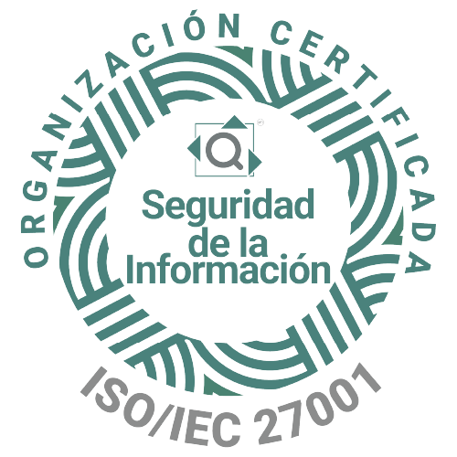
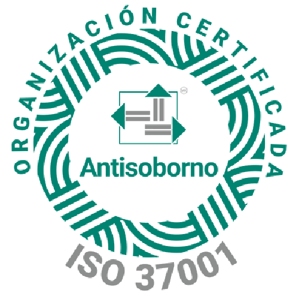

OPERACIONES IMPULSADAS POR INTELIGENCIA.
DISEÑADAS PARA ESCALAR.
Potenciamos operaciones de atención al cliente de alto volumen integrando inteligencia artificial aplicada, gobernanza automatizada y flujos de trabajo optimizados.
Resolución de casos más ágil
Flujos de trabajo automatizados
Validación con OCR e IA
Redundancia binacional multisitio
VIRTUALIZACIÓN CON IA: EFICIENCIA ESCALABLE PARA ALTO VOLUMEN
Acompañamos a las organizaciones en la transición de un esquema dependiente de plantilla física a un ecosistema híbrido virtualizado con IA. Optimizamos los requerimientos de talento humano en un 50% o más, alineando la capacidad de forma flexible con los picos de volumen y los acuerdos de nivel de servicio (SLA).
Modelo tradicional de BPO [+200 especialistas]
Anteriormente, escalar el volumen de una campaña exigía incrementar puestos físicos de trabajo, gestionando más de 200 agentes dedicados en piso para absorber horas pico de transacción.
Virtualización con IA [Optimización de +50% en plantilla]
Al integrar IA conversacional, verificación automatizada de datos y enrutamiento inteligente, virtualizamos las interacciones rutinarias: reducimos el requerimiento de personal en 50% o más manteniendo el 100% de cumplimiento en SLA.
NUESTROS LOGROS EN EXCELENCIA OPERATIVA
Automatización de títulos vehiculares
Ingesta automatizada con OCR para trámites de títulos, sustituyendo validación manual con programación inteligente.
Gestión de casos complejos y auditoría legal
Validación documental multiestatal con apego a normativas vehiculares y listas de verificación de auditoría en vivo.
Agendamiento centralizado y despacho
Decodificación de VIN a nivel nacional, cruce de inventario de refacciones y despacho centralizado de técnicos móviles en EE. UU.
Comunicaciones de misión crítica
Gestión de cuentas y facturación 24/7 en instalaciones federales con alta demanda y redundancia multisitio.
Venta omnicanal y gestión de picos
Dimensionamiento dinámico de especialistas bilingües absorbiendo volúmenes masivos de fin de año en chat, voz y correo.
Copiloto de IA en tiempo real y analítica de voz
Sugerencias de respuesta en vivo en pantalla y notas automáticas de CRM combinadas con analítica de voz al 100%.
TECNOLOGÍA APLICADA A LA EXPERIENCIA DEL CLIENTE
Más de 20 años liderando la evolución binacional de experiencia del cliente e inteligencia artificial en México y EE. UU. (2005 - 2026).
No somos un centro de contacto tradicional. Somos un socio tecnológico y operativo que impulsa la excelencia para marcas líderes en el mercado.
Evolución del talento humano
Fundación
Expansión
Pico pre-IA
Era post-IA
Mapa de sedes operativas

Optimización del talento humano con IA: Operación calibrada a más de 650 especialistas de alto desempeño y copilotos de alta productividad en piso.
SEGURIDAD INTEGRAL Y CERTIFICACIONES AUDITADAS
Cada interacción de clientes, dato transaccional y registro corporativo está respaldado por estándares reconocidos internacionalmente, rigurosas auditorías de seguridad informática y controles de continuidad de negocio.

ISO 9001:2015
Mejora continua, ejecución auditada de procesos, operaciones estandarizadas y gobernanza directiva.

ISO 18295-1:2017
Estándar internacional de servicio para centros de contacto, bienestar del talento, satisfacción y fiabilidad de SLA.

Modelo Global CIC
Marco de centros de interacción con clientes de alto desempeño verificado por el Instituto Mexicano de Teleservicios.

ISO 27001:2022
Cifrado de datos en tránsito y en reposo, defensas de perímetro SOC, control de accesos RBAC y arquitectura zero-trust.

PCI-DSS v4.0
Enmascaramiento automatizado de audio, pausa y reanudación en grabaciones y cero almacenamiento de datos de pago.

ISO 20000-1:2018
Alineación de servicios con mejores prácticas ITIL, gestión de incidentes, control de cambios y alta disponibilidad.

ISO 22301:2019
Redundancia geográfica de telefonía entre sedes de CDMX, Ciudad Juárez y El Paso sin interrupción operativa.

ISO 37001:2016
Ética corporativa sin concesiones, estricto apego legal y protocolos de tolerancia cero a la corrupción.

Distintivo ESR 2026
Reconocimiento a salarios competitivos, bienestar del colaborador, inclusión y sustentabilidad en la comunidad.
MODELO DE TRABAJO Y PLAN DE ACCIÓN EJECUTIVO
Diagnóstico y perfilamiento de procesos (Semana 1)
Analizamos volúmenes de llamadas, patrones de AHT, cuellos de botella en validaciones manuales e integraciones técnicas.
Virtualización con IA y entorno de pruebas (Semanas 2-3)
Configuramos copilotos de IA personalizados, flujos de OCR y reglas de enrutamiento telefónico en un ambiente controlado.
Alineación del equipo de especialistas (Semanas 3-4)
Incorporamos especialistas bilingües seleccionados en nuestras instalaciones de Roma o Ciudad Juárez, entrenados con copilotos de IA.
Salida a producción y optimización continua (Día 30+)
Transición operativa completa bajo garantías de SLA, auditoría de calidad al 100% con analítica de voz y reportes ejecutivos.
Mauricio Cruz
Director de Operaciones & Dirección Comercial · Telat Group